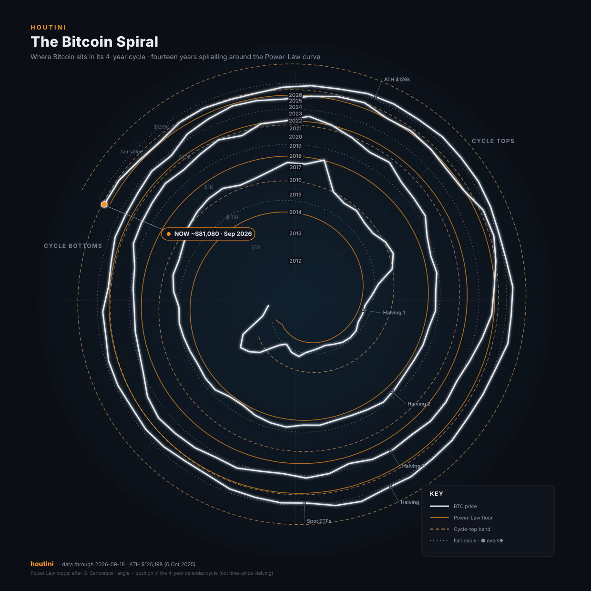

How to read it
- Angle: where Bitcoin is in its 4-year cycle. One full turn around the chart = four years, so the same months in 2013, 2017, 2021 and 2025 sit at the same clock position.
- Radius: price on a log scale. Each dashed ring is a 10× level ($10 → $100k), so each turn outward is a different order of magnitude.
- White line: Bitcoin's monthly price, spiralling outward through time.
- Orange band: the Power-Law channel: a remarkably stable long-term curve Bitcoin has tracked since 2010. Solid = the historical floor, dotted = fair value, dashed = the cycle-top band.
- Grey dots: the cycle's milestones (halvings, the spot-ETF launch, the all-time high).
Embed it
The chart is a single self-contained SVG. Drop it in with an <img> or <object>:
<img src="https://richybaxter.github.io/Mandala/btc-mandala.svg"
alt="The Bitcoin Spiral" style="max-width:100%;height:auto">Or inline the SVG markup directly from btc-mandala.svg for crisp scaling and themable styling.
Update the data
Edit data/btc-monthly.json (price), data/events.csv (diary)
or data/flows.csv (ETF flows), then re-render:
python3 generate.py
# refresh ETF flows from a free source first:
FLOWS_URL="https://your-source/btc-etf-daily.csv" python3 fetch_flows.pyAn open-source chart by houtini. The Power-Law model is the work of Giovanni Santostasi: Bitcoin's price has tracked a single power-law curve since the network was a few months old. Monthly closes refresh in CI from real Binance data, anchored to milestones (ATH $126,198 on 6 Oct 2025). Educational, not financial advice.